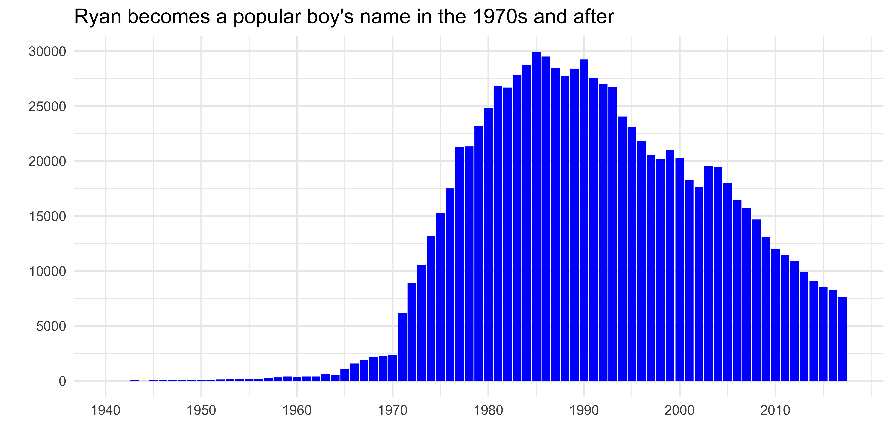
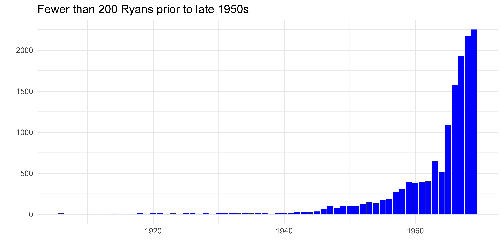
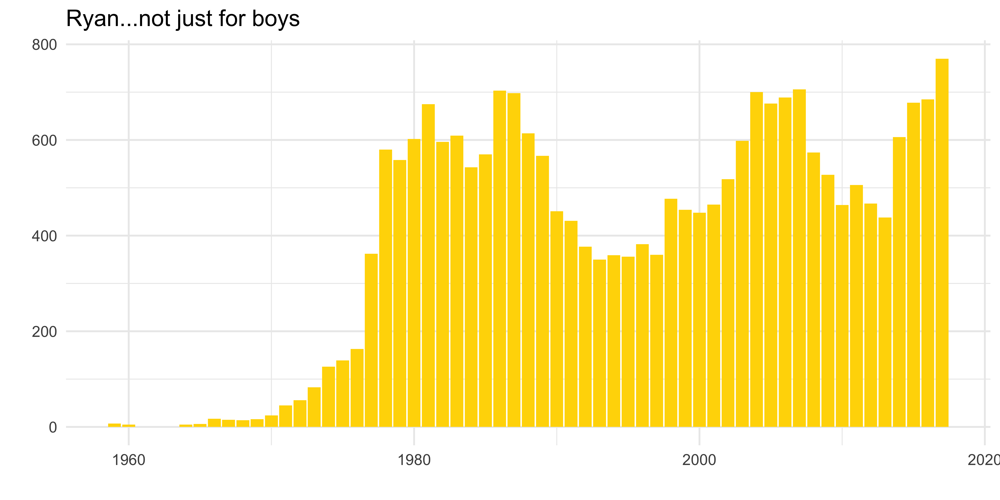
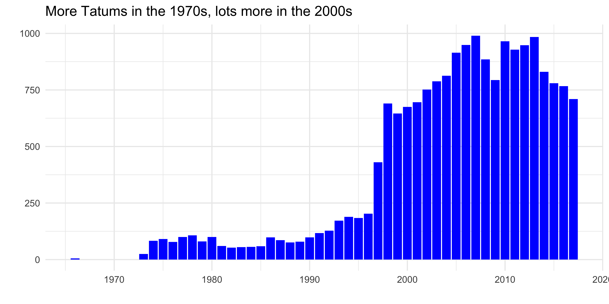
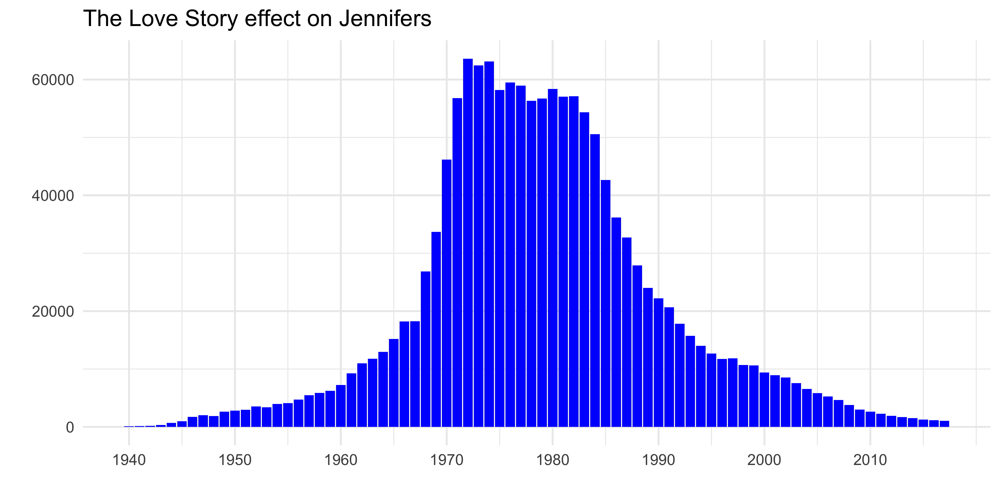
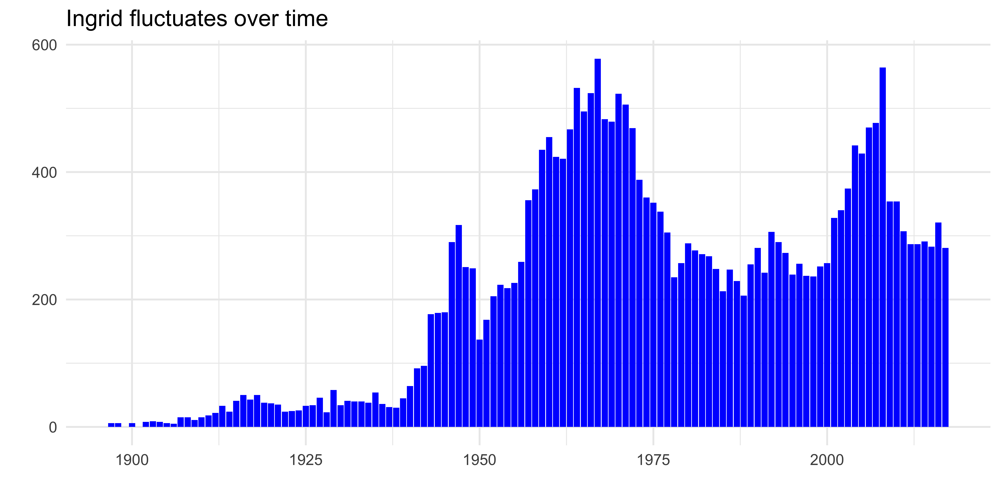

library(tidyverse) # to do tidyverse things
library(tidylog) # to get a log of what's happening to the data
library(janitor) # tools for data cleaning
library(babynames) # pacakge with name data from US Social Security AdminIntroduction
The actor Ryan O’Neal died on December 8, 2023. If you’re of a certain age and a film fan you might know him best from a pretty good run in the 1970s of very diverse films from Love Story, to the Peter Bogdonavich gems What’s Up Doc and Paper Moon, and then working with Stanley Kubrick in Barry Lyndon and Richard Attenborough in A Bridge Too Far. Not to mention the under-rated The Driver. If you’re of a certain age but more into celebrity gossip you might know him best from dating Farrah Fawcett and being John McEnroe’s father-in-law.
If your name is Ryan, like my friend Ryan Godfrey, you will know him not only from films (Ryan G watches a lot of movies) but for arguably launching the name Ryan into the American babysphere. Pop culture does sometimes influence what we name our kids (do you know anyone with a kid born in the last 10 years who named them Arya? I know at least one), and Ryan (Godfrey’s) post here:
…showed that while correlation may not always be causation, Ryan was mostly a last name until Love Story hit big and made Ryan O’Neal a star. And ironically, Ryan wasn’t even Ryan O’Neal’s given first name…it was Charles.
Getting Baby Name Data
You can go to the US Social Security Administration’s (SSA) baby names page and check for yourself what are the popular names in any given year, or track the popularity of names over time. You can also download data and do your own analysis. Or you can use the babynames package created by Hadley Wickham of Posit (formerly RStudio). Which is what we’ll do here to look at a few names of interest.
The SSA data is, as they note, based on applications for Social Security numbers (SSN). The dataset includes only SSN applciations for people born in the US and excludes any name counts below 5 in any given year.
So let’s check out how bay names have trended in the US.
To start we’ll load packages to import and clean the data. These are the three packages I use for almost every analysis in r, plus the babynames package.
The package comes with a few datasets. We will use the babynames set, which has year of birth, sex, name, number, and proportion of people of that sex with that name.
Counting Ryans
Unlike most of my posts, I won’t be doing any data transformation or fancy visuals…I just want to see how a few names have trended over the years. First, let’s replicate Ryan G’s chart, and look at the name “Ryan”. We’ll start at 1940 since we already know from Ryan G’s chart when it took off.
Before we continue, a couple of caveats…
- There was a baby boom from the late 1940s onward, so even with the dip after 1965 there have been many more births and more people getting SSNs than pre WWII. Many older workers born well before Social Security was a thing never applied for numbers so weren’t in the system. So…
- A more nuanced analysis would be proportion of births with the names. But this isn’t meant to be nuanced or statisitically significant, just a quick look at how name popularity has changed over time in the US.
From here on in the r code is folded, so click the arrow to the left of the text above the plot to expand the code window.
Show code for Ryans since 1940
# read in babynames data from package as a local set
namesdf <- babynames
namesdf %>%
filter(sex == "M") %>%
filter(name == "Ryan") %>%
filter(year > 1940) %>%
ggplot(aes(x = year, y = n)) +
geom_bar(stat = "identity", fill = "blue") +
scale_x_continuous(
breaks = c(1940, 1950, 1960, 1970, 1980, 1990, 2000, 2010),
labels = c("1940", "1950", "1960", "1970", "1980", "1990", "2000", "2010")) +
scale_y_continuous(
breaks = c(0, 5000, 10000, 15000, 20000, 25000, 30000),
labels = c("0", "5000", "10000", "15000", "20000", "25000", "30000")) +
theme_minimal() +
labs(title = "Ryan becomes a popular boy's name in the 1970s and after", x= "", y = "")
So yes, as Ryan G wrote, the name Ryan had a slight bump from Peyton Place but the big (baby) bump came when Love Story came out in 1970 and continued through the 1970s and 1980s while Ryan O’Neal’s celebrity status was at its peak.
We can see wisps of Ryans before 1970, and because the numbers hit almost 30,000 pre-1970 is a bit compressed. So let’s isolate those years…
Show code for Ryans before 1970
namesdf %>%
filter(sex == "M") %>%
filter(name == "Ryan") %>%
filter(year < 1970) %>%
ggplot(aes(x = year, y = n)) +
geom_bar(stat = "identity", fill = "blue") +
theme_minimal() +
labs(title = "Fewer than 200 Ryans prior to late 1950s", x= "", y = "")
Fewer than 200 up until the late 1950s, then modest increases after O’Neal starred in the night-time sopa opera Peyton Place from 1964 to 1969.
But wait, we’re only looking at boys named Ryan. Do you know any women named Ryan? You might…
Show code for girl Ryans since 1940
namesdf %>%
filter(sex == "F") %>%
filter(year > 1940) %>%
filter(name == "Ryan") %>%
ggplot(aes(x = year, y = n)) +
geom_bar(stat = "identity", fill = "gold") +
theme_minimal() +
labs(title = "Ryan...not just for boys", x= "", y = "")
Counting Tatums
Thinking about O’Neal’s effect on the name Ryan, I got to thinking about the name of his daughter Tatum. She won an Oscar for Paper Moon so I wondered if the name became more popular in the early-mid 1970…
Show code for Tatums
namesdf %>%
filter(sex == "F") %>%
filter(name == "Tatum") %>%
ggplot(aes(x = year, y = n)) +
geom_bar(stat = "identity", fill = "blue") +
theme_minimal() +
labs(title = "More Tatums in the 1970s, lots more in the 2000s", x= "", y = "")
…and sure enough it did. Not to the same extent as Ryan, but a definite pop from 1973 on. After Paper Moon she was in The Bad News Bears, International Velvet and Little Darlings. So like her dad had a run of fame through the early 1980s. But why the jump in the name’s popularity in the late 1990s and through the 2000s? Her very public relationship and marriage to tennis pro John McEnroe? She didn’t do much film or TV work until the early-mid 2000s. So that resurgence, combined with a nostaliga bump? Some other famous Tatum I’m overlooking?
Counting Jennifers
All this name trending chatter reminded me of my own firmly held belief which is that it’s very statistically likely a Gen X man or woman in the US will have dated at least one Jennifer in their lives. I’ve dated more than one. It’s almost unavoidable. Why? Well let’s look at birth numbers…
Show code for Jennifers
namesdf %>%
filter(sex == "F") %>%
filter(name == "Jennifer") %>%
filter(year >= 1940) %>%
ggplot(aes(x = year, y = n)) +
geom_bar(stat = "identity", fill = "blue") +
scale_x_continuous(
breaks = c(1940, 1950, 1960, 1970, 1980, 1990, 2000, 2010),
labels = c("1940", "1950", "1960", "1970", "1980", "1990", "2000", "2010")) +
theme_minimal() +
labs(title = "The Love Story effect on Jennifers", x= "", y = "")
Jennifer had been on the rise from the 1940s onward, slow and steady. But boomed around 1970. And hey, the female lead in Love Story was named Jenny. Coincidence? Or was Love Story more of a cultural juggernaut than we give it credit 50+ years on? I’d say sorry, but…
Lately the name has fallen out of favor. And it’s striking how normally distributed the curve is, given the timeframe.
And finally, in the interest of marital harmony, and because I showed these charts to my wife Ingrid when I made them just for fun, and then she asked what about her name…well I can’t leave her chart out of the post, right? So here’s the name Ingrid over time.
Show code for Ingrids
namesdf %>%
filter(sex == "F") %>%
filter(name == "Ingrid") %>%
ggplot(aes(x = year, y = n)) +
geom_bar(stat = "identity", fill = "blue") +
theme_minimal() +
labs(title = "Ingrid fluctuates over time", x= "", y = "")
So there you go. There’s much more to do…download the most recent sets, match names to regions and states. Look at other countries either through r packages like ukbabynames or use packages or API calls to national statistical services.